Amarylkovité (Amarryllidaceae)

bledule jarní (Leucojum vernum)

sněženka podsněžník (Galanthus nivalis)
Blahočetovité (Araucariaceae)
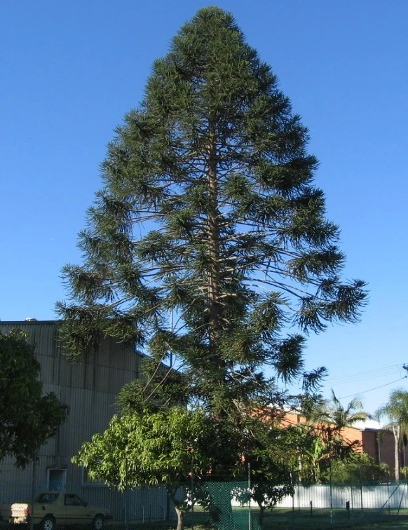
blahočet (Araucaria)
Bobovité (Fabaceae)

hrachor jarní (Lathyrus vernus)

hrachor luční (Lathyrus pratensis)

jetel ladní (Trifolium campestre)

jetel luční (Trifolium pratense)

jetel plazivý (Trifolium repens)

trnovník bílý (Robinia pseudoacacia)

vikev ptačí (Vicia cracca)
Borovicovité (Pinaceae)

borovice kleč (Pinus mugo)

borovice lesní (Pinus sylvestris)

borovice vejmutovka (Pinus strobus)

borovice černá (Pinus nigra)

cedr atlaský (Cedrus atlantica)

douglaska tisolistá (Pseudotsuga menziesii)

jedle bělokorá (Abies alba)

jedlovec kanadský (Tsuga canadiensis)

modřín opadavý (Larix decidua)

smrk pichlavý (Picea pungens)

smrk ztepilý (Picea abies)
Brukvovité (Brassicaceae)

brukev řepka olejka (Brassica napus)

hořčice rolní (Sinapis arvensis)

kokoška pastuší tobolka (Capsella bursa-pastoris)

penízek rolní (Thlaspi arvense)

česnáček lékařský (Alliaria petiolata)
Brutnákovité (Boraginaceae)

hadinec obecný (Echium vulgare)

kostival lékařský (Symphytum officinalis)

plicník lékařský (Pulmonaria officinalis)

pomněnka bahenní (Myosotis palustris)
Bukovité (Fagaceae)

buk lesní (Fagus sylvatica)

dub letní (Quercus petraea)

dub zimní (Quercus robur)
Břízovité (Betulaceae)

bříza bělokorá (Betula pendula)

olše lepkavá (Alnus glutinosa)
Cykasovité (Cycadaceae)
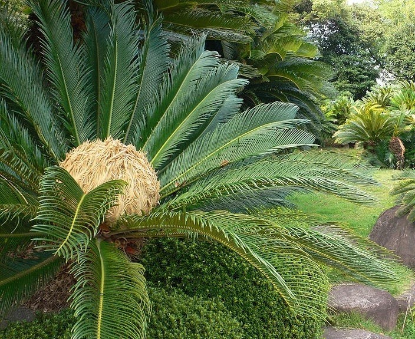
cykas (Cycadaceae)
Cypřišovité (Cupressaceae)
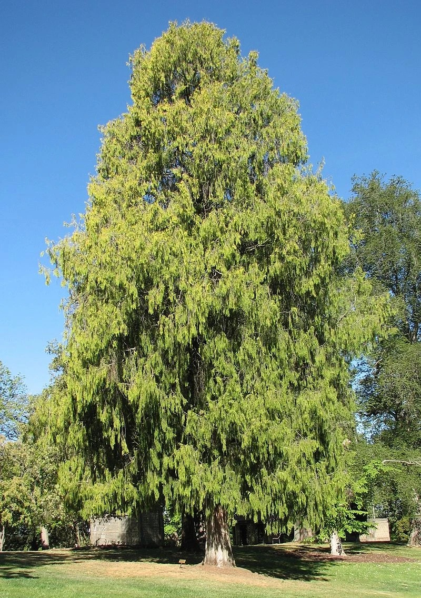
cypřiš (Cupressus)

jalovec obecný (Juniperus communis)

metasekvoje čínská (Metasequoia glyptostroboides)

sekvojovec obrovský (Sequoiadendron giganteus)

tisovec dvouřadý (Taxodium distichum)

zerav západní (Thuja occidentalis)
Hluchavkovité (Lamiaceae)

hluchavka nachová (Lamium purpureum)

hluchavka bílá (Lamium album)

mateřídouška obecná (Thymus serpyllum)

zběhovec plazivý (Ajuga reptans)

šalvěj luční (Salvia pratensis)
Hvozdíkovité (Caryophyllaceae)

hvozdík kartouzek (Dianthus carthusianorum)

kohoutek luční (Lychnis flos-cuculi)

ptačinec velkokvětý (Stellaria holostea)
Hvězdnicovité (Asteraceae)

chrpa modrá (Centaurea cyanus)
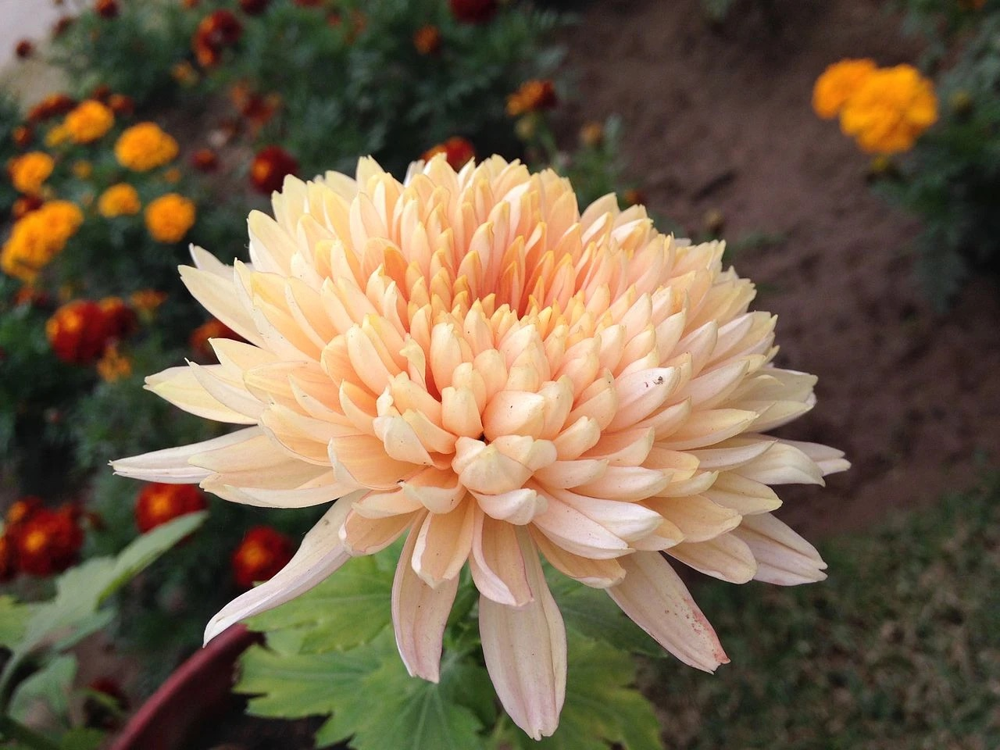
chryzantéma (Chrysanthemum)

devětsil lékařský (Petasites hybridus)

heřmánek pravý (Chamomilla recutita)

kopretina bílá (Leucanthemum ircutianum)

pampeliška lékařská (Taraxacum officinale)
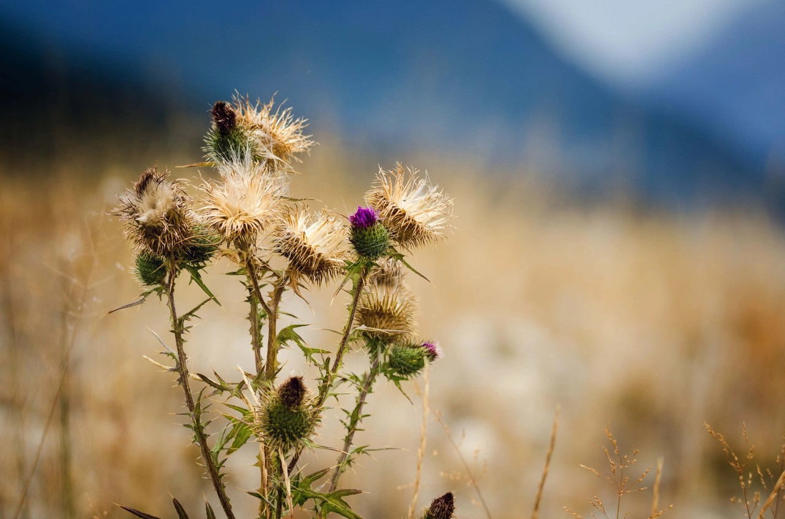
pcháč (Cirsium)

podběl obecný (Tussilago farfara)

sedmikráska chudobka (Bellis perennis)

slunečnice roční (Helianthus annuus)

čekanka obecná (Cichorium intybus)

řebříček obecný (Achillea millefolium)
Javorovité (Aceraceae)

javor klen (Acer pseudoplatanus)

javor mléč (Acer platanoides)
Jinanovité (Ginkgoaceae)

jinan dvoulaločný (Gingo biloba)
Jírovcovité (Hippocastanaceae)

jírovec maďal (Aesculus hippocastanum)
Kopřivovité (Urticaceae)

kopřiva dvoudomá (Urtica dioica)

kopřiva žahavka (Urtica urens)
Krtičníkovité (Scophulariaceae)

divizna velkokvětá (Verbascum thapsiforme)

jitrocel kopinatý (Plantago lanceolata)

jitrocel prostřední (Plantago media)

jitrocel větší (Plantago major)

podbílek šupinatý (Lathraea squamaria)

rozrazil rezekvítek (Veronica chamaedrys)
Leknínovité (Nymphaeaceae)

leknín bílý (Nymphaea alba)

stulík žlutý (Nuphar luteum)
Liliovité (liliaceae)
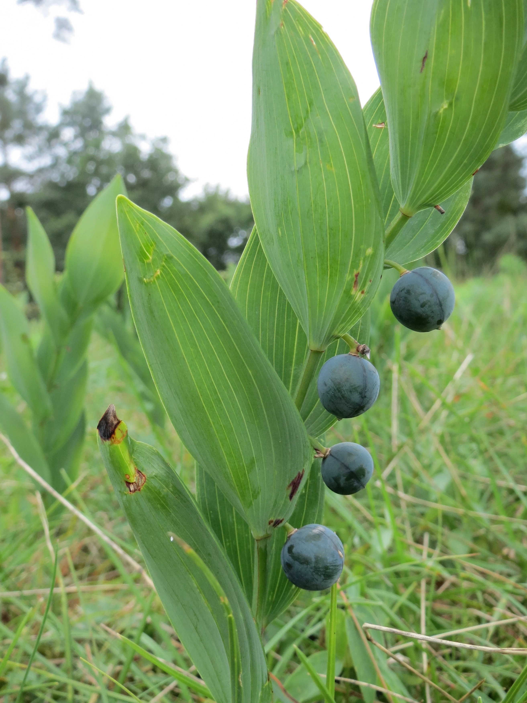
kokořík (Polygonatum)

konvalinka vonná (Convallaria majalis)

ocún jesenní (Colchicum autumnale)

vraní oko čtyřlisté (Paris quadrifolia)
Lilkovité (Solanaceae)

rulík zlomocný (Atropa bella-donna)
Lipnicovité (Poaceae)

bojínek luční (Phleum pratense)

ječmen setý (Hordeum vulgare)
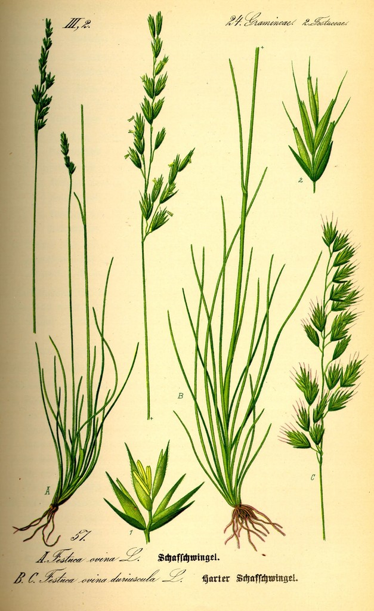
kostřava (Festuca)

kukuřice setá (Zea mays)

oves setý (Avena sativa)

pšenice setá (Triticum vulgare)

rákos obecný (Phramites communis)

rýže setá (Oryza sativa)

srha říznačka (Dactylis glomerata)

žito seté (Secale cereale)
Lípovité (Tiliaceae)

lípa srdčitá (Tilia cordata)

lípa velkolistá (Tilia Platyphyllos)
Lískovité (Corylaceae)

habr obecný (Carpinus betulus)

líska obecná (Corylus avellana)
Merlíkovité (Chenopodiaceae)

lebeda lesklá (Atriplex sagittata)
Miříkovité (Apiaceae)

bedrník obecný (Pimpinella saxifraga)

bolehlav plamatý (Conium maculatum)

bolševník obecný (Heracleum sphondylium)

bršlice kozí noha (Aegopodium podagraria)

kerblík lesní (Anthriscus sylvestris)
Mákovité (Papaveraceae)

mák setý (Papaver somniferum)

mák vlčí (Papaver rhoeas)

vlaštovičník větší (Chelidonium majus)
Pryskyřníkovité (Ranunculaceae)

blatouch bahenní (Caltha palustris)

hlaváček jarní (Adonis vernalis)

jaterník podléška (Hepatica nobilis)
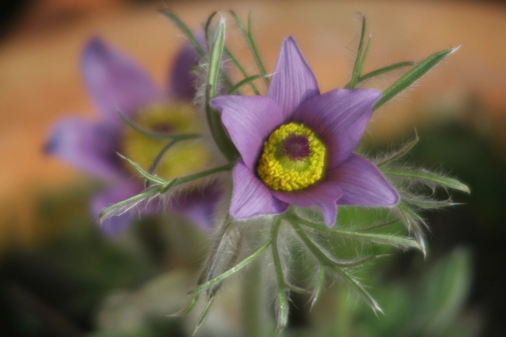
koniklec (Pulsatilla)

orlíček obecný (Aquilegia vulgaris)

orsej jarní (Ficaria verna)

pryskyřník prudký (Ranunculus acris)

sasanka hajní (Anemone nemorosa)
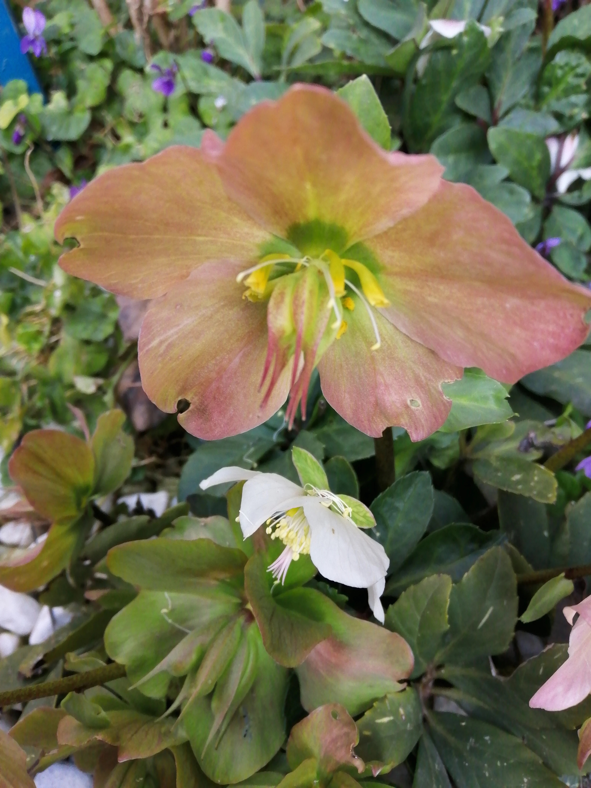
čemeřice (Helleborus)
Růžovité (Rosaceae)
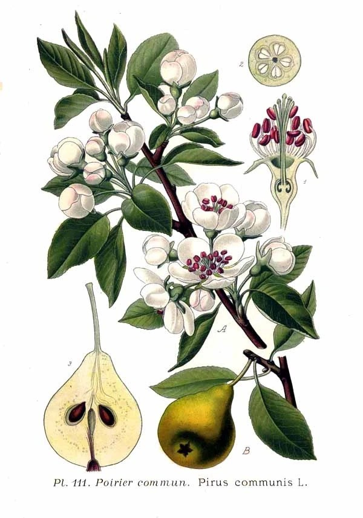
hrušeň (Pyrus)
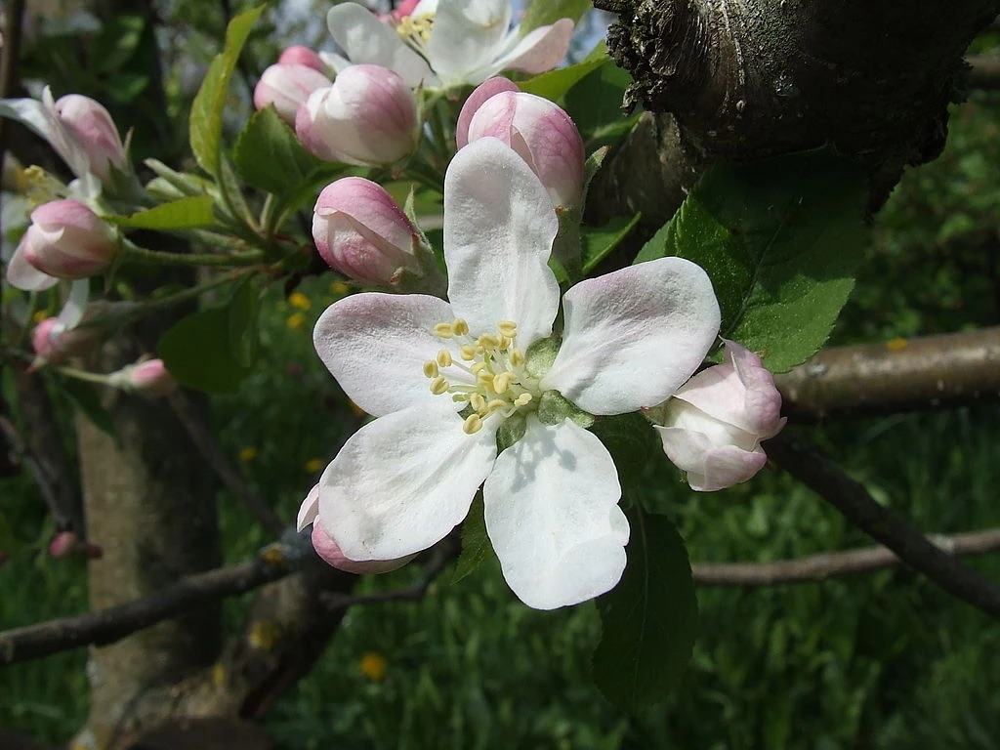
jabloň (Malus)

jahodník obecný (Fragaria vesca)
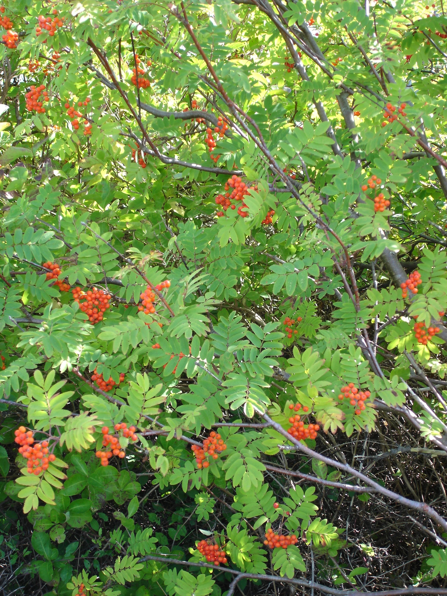
jeřáb (Sorbus)

kontryhel obecný (Alchemilla vulgaris)

kuklík městský (Geum urbanum)

mochna husí (Potentilla anserina)

mochna nátržník (Potentilla erecta)

ostružiník křovitý (Rubus fruticosus)

ostružiník maliník (Rubus idaeus)

růže šípková (Rosa canina)

slivoň broskev (Prunus persica)

slivoň meruňka (Prunus armeniaca)

slivoň trnka (Prunus spinosa)

slivoň třešeň (Prunus avium)

slivoň višeň (Prunus cerasus)

slivoň švestka (Prunus domestica)

řepík lékařský (Agrimonia eupatoria)
Tisovité (Taxaceae)

tis červený (Taxus baccata)
Violkovité (Violaceae)

violka vonná (Viola odorata)
Vrbovité (Salicaceae)

topol bílý (Populus alba)

topol osika (Populus tremula)

topol černý (Populus nigra)

vrba bílá (Salix alba)

vrba jíva (Salix caprea)

vrba křehká (Salix fragilis)
Vstavačovité (Orchideaceae)

hlístník hnízdák (Neottia nidus-avis)

kruštík širolistý (Epipactis helleborine)

střevíčník pantoflíček (Cypripedium calceolus)

vemeník dvoulistý (Platanthera bifolia)

vstavač kukačka (Orchis morio)